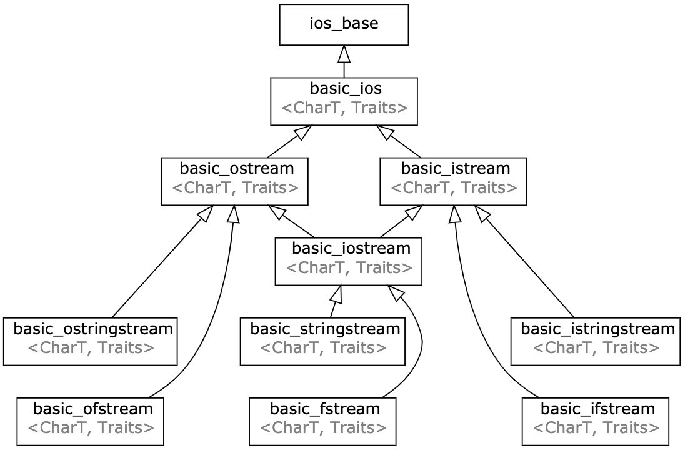

《Primer C++ 5th》完全笔记（第 1-8 章）
最近趁新冠肺炎在家工作（WFH）期间的“充足”闲暇时间，把 Primer C++（第五版）整本书又完整地看了一遍。花了将近一个月的时间，整理出近 300 条左右的笔记，基本涵盖了所有 C++ 语言需要注意的细节，而本文将首先记录全书第1-8章中出现的知识点。注意这些知识点的记录完全遵循我个人的想法，因此也仅适配我个人的情况和需求，未记录的其他知识点并非不重要。
(Page：4) 可用于 Shell 脚本：
echo $?上一次程序退出的返回值，0 通常表示没有错误，其他表示失败；echo $$当前脚本运行所在进程的 ID 号；echo $#传入脚本的参数个数（同主函数的 argc 参数）；echo $0脚本名称（同主函数的 args[] 参数）；echo $1传入脚本的第一个参数；echo $2传入脚本的第二个参数；Page 5ios istream ostream 与 iostream 是对应模板类的一个常用 char 类型特化；每一个类都有对应的 wchar_t 宽字符类型特化版本；其中 basic_istream 和 basic_ostream 虚继承自 basic_ios，以保证 basic_iostream 对象只有一份 basic_ios 实例。
typedef std::basic_ios<char> ios;
typedef std::basic_istream<char> istream;
typedef std::basic_ostream<char> ostream;
typedef std::basic_iostream<char> iostream;

- Page 7std::cout 和 std::cin 两个对象均返回其自身作为表达式的运算结果，因此这里可以通过 “<<” 运算符进行链式调用。
- Page 13通常使用
while (std::cin >> value) {}来判断输入流是否有效；或使用cin::good()来判断：
std::ifstream file("./file.txt", std::ios::binary);
char c;
// eofbit / failbit / badbit 三个 std::ios_base::iostate 位均为 false；
while (file.good() && file >> c) {
cout << c;
}
- Page 30用于国际化支持的类型：wchar_t 及 char16_t / char32_t（用于 Unicode 字符集）；一个约定即：更大值类型至少和次大值类型的可取值范围一样大，比如：一个 int 至少和一个 short 一样大；一个 long 至少和一个 int 一样大。
- Page 31写法上：unsigned int 和 unsinged 是一样的；
- Page 32计算机内部采用 2 的补码（Two’s Complement）表示负数。
- 正数补码：与原码相同；
- 负数补码：原码（首位为1）除首位外取反再加一。因为进位的原因导致 -0 和 +0 的补码相同，而原码不同，因此补码相较原码便可多表示一个数字。如 10000000（比如8位二进制码，将原码补码按照从 +127 逐渐递减的方式写出来，会发现最后补码多出来一位即 10000000，按照递减顺序可表示 -128）便为 -128 的补码，而其没有对应的原码和反码。使用这种方式有利于 CPU 电路进行加法运算（比如一个正数加一个负数）：
０００１００００ (16)
+ １１１１１０００ (-8)
－－－－－－－－－
１００００１０００
- Page 32优先使用的 C++ 类型：int / long long / unsigned char / signed char / double。其中由于 char 的符号在不同机器上可能不相同，因此需要明确指出其符号类型。
- Page 34C-Implicit Conversions：如果具有 unsigned 整数类型的操作数其 rank 大于或等于另一个操作数的类型的 rank，则 signed 整数类型的操作数应转换为具有 unsigned 整数类型的操作数类型。
unsigned u = 10;
int i = 42;
/**
* 此处 i 会隐式转换成 unsigned 类型；
* int -> unsigned int: -42 -> (2^32)4294967296 + (-42);
*/
cout << (u + i) << endl;
- Page 39常用的值初始化形式：
// 使用花括号“{}”的列表初始化会对精度丢失给出警告（Warning）；
int x = 0;
int x = {0};
int x(0);
int x{0};
- Page 40定义于函数体内的内置类型对象如果没有初始化，则其值未定义。类的对象如果没有显示地初始化，则其值由类确定（不带有 explicit 的默认构造函数）。
void foo() {
int x;
cout << x << endl; // x 值未定义；
}
- Page 41分离式编译之 extern 用法：
// header.h
#ifndef HEADER_H
#define HEADER_H
extern int globalX; // 只声明，而非定义（告知编译器类型，在链接时再寻找实际定义的符号）；
#endif
// main.cc
#include "header.h"
int globalX; // 实际定义；
int main(int argc, char** argv) {
globalX = 5;
return 0;
}
- Page 44访问全局作用域：
#include <iostream>
int y = 1;
int main(int argc, char** argv) {
int y = 2;
std::cout << ::y << std::endl;
return 0;
}
- Page 46引用：是值绑定而非拷贝，绑定后无法再更改；非常量引用不能用字面量值进行初始化。
- Page 48nullptr == NULL == 0；
- Page 52指针的引用：
int i = 42;
int* p = &i;
int*& r = p;
- Page 54若需要在多个文件之间共享 const 对象，则必须在变量的声明或定义之前添加 extern 关键字。
// header.h
#ifndef HEADER_H
#define HEADER_H
extern const int bufferSize;
#endif
// main.cc
#include "header.h"
extern const int bufferSize = 1024; // 定义；
int main(int argc, char** argv) { ... }
- Page 56复杂指针解读：
// 从右向左分析：常量指针（本身值不能改）->（指向）const int（整型常量）；
const int *const pip = π
- Page 57两种 const：
- 顶层（top-level const）const：指针本身是常量；
- 底层（low-level const）const：指针所指向对象是个常量；
- Page 58当执行对象拷贝（赋值）时，拷入和拷出对象必须具有相同的底层 const 资格（顶层 const 通常被忽略。在使用 auto 关键字时，变量的引用类型和顶层 const 特性需要由用户自己添加，如：
const auto& x = y;，否则将会被忽略，即 “Type Decay”），以保证原对象具有统一的可访问性。 - Page 59constexpr 变量需要能在编译过程中就得到求值，因此对应表达式只能是字面量值或同类的 constexpr 表达式。constexpr 指针的初始值必须是 nullptr 或 0，或存储于某个固定地址的对象。而函数体内定义的变量并非存放在固定地址中，因此 constexpr 不能指向这样的变量（地址）。相反，定义于所有函数体之外的对象其地址固定不变，可用来初始化 constexpr 指针。
int x = 30; // 函数体之外的变量；
int main(int argc, char **argv) {
constexpr int y = x; // 非常量表达式（编译器自行判断）；
constexpr int *p = &x; // 可以用来初始化 constexpr 指针；
}
- Page 60对指针来说，constexpr 的存在类似于顶层 const：
const int* p = nullptr; // 指向常量的指针；
// int* const q = nullptr;
constexpr int* q = nullptr; // 常量指针；
// const int* const w = nullptr;
constexpr const int* w = nullptr; // 指向常量的常量指针；
- Page 61typedef 陷阱：此处声明的 cstr 是常量指针，const 是对给定类型的修饰符.
typedef char* pstring;
const pstring cstr = 0; // 顶层 const；
- Page 63decltype 与表达式形式：
int i = 1;
int* p = &i;
decltype(*p) r; // int&;
decltype((i)) d = i; // int&;
decltype(i) e; // int;
- Page 68头文件保护符：防止头文件的内容被重复包含。
#ifndef SALES_DATA_H
#define SALES_DATA_H
...
#endif
- Page 74C++17 支持的 Multiple Declarators，可以用一个 using 语句进行多个声明。
// clang++ main.cc -o main --std=c++17
using std::cout, std::endl, std::cin;
- Page 79尽量保证使用同类型数据进行比较运算，以防止 Implicit Conversions 带来的问题：
std::string s = "Hello!";
// length()/size() 返回 string::size_type 类型为无符号类型；
std::cout << ((int)s.length() < -10) << std::endl;
- Page 81C++ 中的字符串字面量值并不是 string 对象，因此在进行加法（+）运算时，需确保运算符两侧至少有一个是 string 类型对象，以使另一个对象可以进行隐式的转换。
- Page 87初始化 std::vector 对象的几种方式：
vector<T> v1;
vector<T> v2(v1);
vector<T> v2 = v1;
vector<T> v3(n, val);
vector<T> v4(n);
vector<T> v5{a, b, c, ...};
vector<T> v6 = {a, b, c, ...};
- Page 88初始值元素列表只能使用花括号，圆括号会被当做构造函数的调用。C++11 只能对没有类内初始值的聚合类（所有成员均为 public、没有定义显式的构造函数（包括拷贝构造）、没有基类、没有虚函数）进行聚合类列表初始化，而 C++14 则可以对有类内初始值的聚合类（自 C++14 起，有无类内初始化器不再成为聚合体的要求）进行列表初始化。非聚合体则按照构造函数初始化。{} 会首先尝试进行列表初始化，若无法实现再尝试通过构造函数进行。复制列表初始化（=）会产生临时对象，性能上可能（RVO/NRVO）低于直接列表初始化。
struct S {
S() = default;
S(initializer_list<int> li) { ... } // 非聚合类，执行构造初始化；
S(int i, double d, string str) : i(i), d(d), str(str) {}
int i = 10;
double d = 1.0;
string str;
};
int main(int argc, char** argv) {
// 直接列表初始化：S s(1, 2.0, "Hello, world!");
S s = {1, 2.0, "Hello, world!")};
return 0;
}
- Page 97iterator / const_iterator。
- Page 98不要在 for 循环的迭代中改变容器的大小，比如：通过 push_back 向容器插入元素（会使迭代器失效）。
- Page 102数组之间不允许拷贝和赋值：
int arr[] = {1,2};
// int b[2] = arr; // 错误；
int* b = arr; // 指针可以；
- Page 103数组指针是个二级指针：
int arr[] = {1, 2};
int (*b)[2] = &arr; // 数组指针；
cout << **b << endl;
cout << *(*b + 1) << endl;
- Page 105auto 推断数组元素只能得到指针；而 decltype 则可以得到数组类型。
// 传递数组引用；
void foo(int (&f)[10]) {
auto x = f;
std::remove_reference<decltype(f)>::type y;
cout << typeid(x).name() << endl; // Pi;
cout << typeid(y).name() << endl; // A10_i;
}
int main(int argc, char **agv) {
int arr[10] = {1, 2}; // 1, 2, 0, 0, 0, 0, 0, 0, 0, 0（多维数组类似）；
foo(arr);
return 0;
}
- （Page: 108）C++ 内置数组可以使用负索引值，编译器会将其转换成对应的指针加减操作。
int arr[10] = {1, 2};
int* p = &arr[2];
cout << p[-1] << endl; // 相当于 *(p - 1)；
- Page 111std::string 可以使用 c_str() 来返回一个字符指针，但其内部仍与 std::string 对象共享同一块内存，因此建议将数组内容重新拷贝一份再继续使用。
- Page 114多维数组和 for 语句的结合，注意内层访问需要使用上一层（除最内层外）的引用类型（可以保留数组类型），否则直接传值会被编译器视为指针：
int arr[2][3] = {{1}, {2}};
// for (const int (&i)[3] : arr) {}
for (const auto &i : arr) {
cout << typeid(i).name() << endl; // A3_i；
for (auto j : i) {
cout << j << endl;
}
}
- Page 121decltype 应用在结果为左值的表达式上时类型为对应左值类型的引用；应用在右值上时则为该值的原始类型；
- Page 124算数运算符在布尔类型上的陷阱（0 为 false，其余为 true）：
bool b = true; // 1；
bool b2 = -b; // -1；
- Page 125取余和商运算：
-(m/n) = (-m)/n = m/(-n);
m%n = m%(-n);
-(m%n) = (-m)%n;
- Page 131使用复合运算符的性能可能会高于同样的一般运算表达式。使用符合运算符只求值一次，使用普通运算符则求值两次（右侧子表达式求值+赋值运算符求值）。
- Page 132建议优先使用前置版本的递增运算符以尽量优化性能；前置版本不需要保存变量之前的值，而后置版本则需要暂存变量的原始值。
- Page 137取反的一般结论：~n = -(n+1)；
原数-补码（与原码、反码相同）：0000 1000（8）
求反-补码：1111 0111（符号位为 1，表示负数）
求反-原码（再求补码，除符号位求反加 1）：1000 1001（-9）
45.Page 144IO 库定义了从 istream 向布尔值的转换规则，因此可以直接使用 while (cin >> s) {} 来判断读入是否成功（即输入流的状态）。
// std::basic_ios 重载了 bool 类型转换操作符；
explicit operator bool() const;
- Page 145const_cast 只能作用于引用和指针，只能改变运算对象的底层 const，并且无法用于修改常量。其主要应用场景在于处理重载函数的 const 调用（如用 const 版本重载函数实现非 const 版本重载函数，两者保留一个 const 版本的完整实现即可）：
const int x = 1;
const int* const y = &x; // y 本身的 const 属性不受影响；
auto k = const_cast<int*>(y); // 无法通过 k 来修改常量 x 的值；
const int &k = x; // 引用没有顶层 const 的概念；
cout << const_cast<int&>(k) << endl;
- Page 162switch … case 结构中的 case 标签必须是整型常量表达式。
- Page 163默认情况下 switch … case 中各语句均处在同一个作用域中，而为 case 语句增加大括号便可为其设置独立的作用域以初始化每个语句的“内部”变量。
- Page 169由于在范围 for 语句（来源于常规的基于迭代器的循环语句）中预存了尾后迭代器 end() 的值，因此不能在循环中更改容器的大小。
std::vector<int> v = {1, 2, 3, 4};
for (auto &i : v) { i *= 2; } // 等价于下面的迭代器循环；
for (auto beg = v.begin(), end = v.end(); beg != end; ++beg) { (*beg) *= 2; }
- Page 172编译器可以直接将 goto 语句对应到类似的机器码（跳转语句），通过跳转到不同的内存地址来决定接下来将要调用的代码。因此相较于函数调用，其性能较高。
- Page 175try … catch 会沿着函数的调用栈向上逐层查找对应的 catch 语句，然后对每一个调用栈进行 stack unwinding 析构该作用域内的变量和对象，因此会损耗一定的性能。
- Page 185自动对象：只存在于块（如函数体）执行期间的对象（默认初始化，值随机）；局部静态对象：static 对象，生命周期一直到主函数结束（内置类型初始化值为0）；
- Page 194显式传递给函数的数组参数（非引用），会被 decay 为对应的指针，失去长度信息。
- Page 199initializer_list 中的元素永远是常量值。
- Page 201函数返回引用不会生成临时值拷贝，但注意不能返回临时值的引用：
const string& shorterString(const string& s1, const string& s2);
- Page 205使用 using 简化数组指针：
using arrT = int[10];
// int (*func(int i))[10];
arrT* func(int i); // 返回数组指针；
- Page 206使用尾置返回类型返回函数指针：
auto func(int i) -> int(*)[10]; // 返回函数指针；
auto func(int (*arr)[5]) -> decltype(arr)*; // decltype 不会丢失数组类型；
- Page 211不同作用域之间的函数无法实现重载，必须保证所有一组重载函数在同一个块作用域内。
- Page 214constexpr 函数（可用于常量表达式的函数，可以在编译时直接展开）的函数体必须有且只能有一条 return 语句：
constexpr int fun() { return 42; }
constexpr int foo = fun();
- Page 216几个常用的调试宏：
cout << __func__ << endl; // 函数名；
cout << __FILE__ << endl; // 文件名；
cout << __TIME__ << endl; // 编译时间；
cout << __LINE__ << endl; // 当前行号；
cout << __DATE__ << endl; // 编译日期；
- Page 220匹配候选函数时，所有算数类型转换的级别都一样，整数字面量值通常向 “int” 提升，浮点字面量值向 “double” 提升。只有在正好匹配对应形参类型时才会正常调用。
- Page 221声明函数指针类似声明数组指针：
bool (*pf)(const std::string); // 定义一个函数指针；
int (*bar(int x, int y))(const std::string); // 返回函数指针的函数；
// auto bar(int x, int y) -> int(*)(const std::string);
int (*arr)[10]; // 数组指针
int (*foo(int x, int y))[10]; // 返回数组指针的函数；
// auto foo(int x, int y) -> int(*)[10];
- Page 230定义在类内部的函数是默认隐式的 inline 函数；在类外部实现的成员方法则需要通过显式添加 inline 关键字来提示内联。
- Page 231类对象中各成员函数会隐式保有一个指向该对象的 this 常量指针，可以通过
this直接调用。 - Page 232常量成员函数：指向常量类对象（底层 const）的常量 this 指针（顶层 const），不能通过该指针修改类对象的内容。
std::string isbn() const { ... } // const 修饰隐含的 this；
- Page 234std::istream 与 std::ostream 等 IO 对象只能通过引用传递，无法拷贝和赋值；并且如需使用，则不能使用常量引用（会更改 IO 流）来传递。
std::istream& foo(std::istream& in) {
int x;
in >> x;
cout << x << endl;
return in;
}
- Page 236类的默认构造函数会为成员变量进行默认初始化：类内初始值（默认值）-> 默认初始化（如数字类型通常为 0）；编译器只有在发现类不包含任何构造函数时才会生成默认构造函数并执行默认初始化。因为：
- 如果一个类在某种情况下需要控制对象初始化，则该类很可能在所有情况下都需要被控制；
- 对于内置类型（int）和复合类型（自定义的类），定义任何函数体之外的内置类型或复合类型变量将被默认初始化，对于函数体内的内置类型的对象，若没有初始化，其值是未定义的；
- 编译器需要能够为所有类成员进行默认初始化（包括能够调用其他类类型的默认构造函数）；
- Page 241友元（友元类、友元函数）允许其他类或函数访问自己的非公有成员，应用场景包括：Profiling、Logging、Debuging 以及 Process Management：
class A {
friend void monitorX(const A& a);
int x = 100;
public:
A(int x) : x(x) {}
};
void monitorX(const A& a) { cout << a.x << endl; }
int main(int argc, char **agv) {
monitorX(666); // 666；
return 0;
}
- Page 243类内定义的类型别名（typedef / using）也遵循类对象的权限访问策略。
- Page 245可变成员（mutable）：即使在 const 函数内也可以修改该成员的值。使用场景：函数计数器、互斥锁等不会影响类对象外部可见状态的场景。
class Screen {
mutable size_t access_ctr;
};
- Page 247const 成员函数只能返回 const 对象的引用（因为这里的隐含 this 将是指向常量的指针，对应的常量对象只能返回给常量引用）。类成员函数可以通过返回类对象的引用来实现”链式调用”。
struct A {
A& add(int x) {
val += x;
return *this;
}
A& sub(int x) {
val -= x;
return *this;
}
int eval() const { return val; }
private:
int val = 0;
};
int main(int argc, char **agv) {
A a;
cout << a.add(10).add(10).sub(5).eval() << endl;
return 0;
}
- Page 250类允许包含指向自身类型的引用或指针，而不能是对象类型：
class A {
B b;
A* a;
};
- Page 251友元不具有传递性（不能跨链传播 A <- B <- C，C 无法访问 A 的私有成员）；若将某个类设置为友元，则该类下的所有成员函数都可以访问对应类的公有及非公有成员；
- Page 252友元的作用仅是影响访问权限，跟函数声明无关（理解为一个权限表，里面有若干函数的签名，符合签名的函数便可以访问该类的私有成员）。
- Page 255类的定义分为两部分：
- 首先，编译成员的声明；
- 直到类全部可见后才编译函数体（所以函数体内的符号会优先引用类范围内声明的符号）；
- Page 255类型名的定义（typedef）通常出现在类的开始处，以防类的其他部分优先被外层的定义污染。
typedef double Money;
class Account {
public:
Money balance() { return bal; } // 类成员声明；函数参数，返回值类型将被优先编译；
private:
// 错误，不能重复定义类型（优先使用了类外的类型定义）；
// typedef double Money;
Money bal; // 优先使用了类外的类型定义；
};
- Page 258如果没有在构造函数初始值列表中显式地初始化成员，则该成员将在构造函数之前执行默认初始化。而 const、引用类型成员以及属于某种未提供默认构造函数的类类型则必须初始化（通过初始值列表给予初值），而不能在构造函数中进行赋值。
- Page 259构造函数初始值列表没有规定成员的初始化顺序，一般编译器按照类中成员定义的先后顺序进行初始化。
- Page 261委托构造函数：使用其他构造函数对某个构造函数进行初始化。
- Page 265只有一个参数的构造函数能够用于隐式转换，多个参数的则无需添加 explicit 关键字（常用的编码规则：只接受一个参数的构造函数通常最好被标记为 explicit 以防不必要的错误隐式转换）。
class A {
public:
A() = default;
explicit A(int x) {}
void foo(const A& a) {}
};
int main(int argc, char **agv) {
A a;
// 无法隐式调用 A 的 explicit 构造函数；
a.foo(100);
}
- Page 266标准库中含有的显示构造函数类：
- 接受一个单参数的 const char* 的 string 构造函数不是 explicit 的；
- 接受一个容量参数的 vector 构造函数时 explicit 的；
- Page 267聚合类：所有成员 public、没有定义显式构造函数、没有基类，没有虚函数，C++14及以后可以有类内初始值；聚合类可以直接使用花括号来初始化（聚合初始化）其成员。
- Page 267字面值常量类：聚合类、字面值类型成员 + constexpr 构造函数 + 默认析构函数 + 成员类内初始值只能使用常量表达式初始化（或对应的 constexpr 构造函数）；
- Page 268constexpr 构造函数用于生成 constexpr 对象，以及 constexpr 函数的参数或返回类型。
class Debug {
public:
// 必须同时符合构造函数和 constexpr 函数的要求，因此一般没有函数体；
/**
* 1、构造函数体必须为空；
* 2、初始值列表只能由常量表达式来赋值；
*/
constexpr Debug(bool b = true) : hw(b), io(b), other(b) {}
constexpr Debug(bool h, bool i, bool o) : hw(h), io(i), other(o) {}
constexpr bool any() const { return hw || io || other; }
void set_io(bool b) { io = b; }
void set_hw(bool b) { hw = b; }
void set_other(bool b) { other = b; }
private:
bool hw;
bool io;
bool other;
};
int main(int argc, char **agv) {
constexpr Debug prod(false);
return 0;
}
- Page 269类的静态成员函数没有 this 指针，因此也无法被声明为 const 函数（const 函数主要用来修饰隐式的 this 指针）。静态成员可以通过类对象进行访问，或通过类作用域符。由于静态成员不属于任何一个对象，因此它们并不是在创建类对象时被定义的。这意味着我们需要在类的外部（对于非 const 静态成员而言；const 成员可以直接在类内部设置默认初始值）定义和初始化每一个静态成员，并只能初始化一次。
- Page 271静态成员可以是不完全类型，也可以作为默认实参来使用（因为其仅属于类，而不属于任一对象）；非常量静态成员如果不在类外初始化，则会丢失该符号；因此类内只是对编译器做声明之用。
class Bar {
static Bar mem;
};
// 非常量静态成员只能在类外定义；
Bar Bar::mem = Bar();
int main(int argc, char **agv) {
Bar bar;
}
- Page 281可以通过名为 rdstate() 的方法返回 std::basic_ios 对象的当前流状态（iostate）。
- Page 282IO 缓冲区刷新的几种方式：
- main 函数结束；
- 缓冲区满；
- endl 主动刷新；
- 使用 std::unitbuf / std::nounitbuf 设置流状态来清空缓冲区（std::cout << std::unitbuf）；
- 使用 std::flush 刷新缓冲区（std::cout << std::flush）；
- 关联流刷新（cin/cerr）-> cout；
- Page 283流的关联：
int main(int argc, char **agv) {
std::ofstream os("text.txt", std::ios_base::out);
// 每当试图从 std::cin 读取数据时都会刷新 std::ofstream（实时写入）；
std::cin.tie(&os);
char c;
while (std::cin >> c) {
// os << c << std::flush;
*std::cin.tie() << c; // 返回指向绑定流的指针；
}
}
// 程序正常退出后 os 才会将数据写入文件；
int main(int argc, char **agv) {
std::ofstream os("text.txt", std::ios_base::out);
char c;
while (std::cin >> c) {
if (c == '0') { break; }
os << c;
}
}
- Page 285两种打开流的方式：std::basic_fstream 的构造函数 / std::basic_fstream 对象的 open 方法。
- Page 285当一个 std::fstream 对象被销毁时，std::basic_fstream::close() 会被自动调用。
- Page 286常用文件模式：
- std::ios_base::in；
- std::ios_base::out；
- std::ios_base::app(append)；
- std::ios_base::ate(at end)；
- std::ios_base::trunc；
- std::ios_base::binary；
- Page 288istringstream 的使用技巧：
int main(int argc, char **agv) {
string line, word;
// 每次读取一行输入；
while (getline(cin, line)) {
istringstream record(line);
// 获取每行的首个单词；
record >> word;
cout << word << endl;
}
}
评论 | Comments